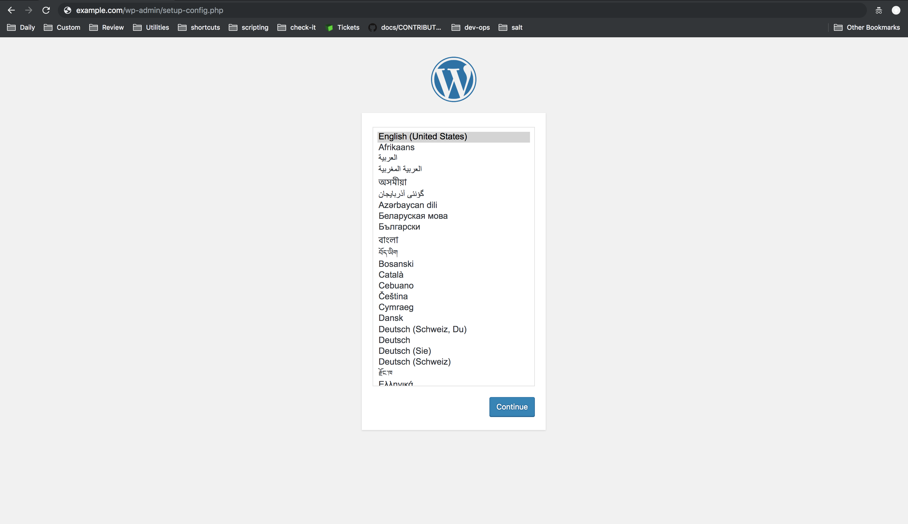

Deploy a WordPress Site Using Terraform and Linode StackScripts
Updated by Linode Contributed by Linode
Linode’s Terraform provider supports StackScripts. StackScripts allow you to automate the deployment of custom software on top of Linode’s default Linux images, or on any of your saved custom images. You can create your own StackScripts, use a StackScript created by Linode, or use a Community StackScript.
In this guide you will learn how to use a Community StackScript to deploy WordPress on a Linode using Terraform.
CautionFollowing this guide will result in the creation of billable Linode resources on your account. To prevent continued billing for these resources, remove them from your account when you have completed the guide, if desired.
Before You Begin
Install Terraform on your computer by following the Install Terraform section of our Use Terraform to Provision Linode Environments guide.
Terraform requires an API access token. Follow the Getting Started with the Linode API guide to obtain one.
If you have not already, assign Linode’s name servers to your domain at your domain name’s registrar.
Browse the existing StackScripts Library to familiarize yourself with common tasks you can complete with existing StackScripts.
Create a Terraform Configuration
Terraform defines the elements of your Linode infrastructure inside of configuration files. Terraform refers to these infrastructure elements as resources. Once you declare your Terraform configuration, you then apply it, which results in the creation of those resources on the Linode platform.
Create the Terraform Configuration File
Ensure that you are in the
terraformdirectory.cd ~/terraformUsing your preferred text editor, create a Terraform configuration file named
main.tfto hold your resource definitions:- ~/terraform/main.tf
-
1 2 3 4 5 6 7 8 9 10 11 12 13 14 15 16 17 18 19 20 21 22 23 24 25 26 27 28 29 30 31 32 33 34 35 36 37 38 39 40 41 42 43 44provider "linode" { token = "${var.token}" } resource "linode_sshkey" "my_wordpress_linode_ssh_key" { label = "my_ssh_key" ssh_key = "${chomp(file("~/.ssh/id_rsa.pub"))}" } resource "random_string" "my_wordpress_linode_root_password" { length = 32 special = true } resource "linode_instance" "my_wordpress_linode" { image = "${var.image}" label = "${var.label}" region = "${var.region}" type = "${var.type}" authorized_keys = [ "${linode_sshkey.my_wordpress_linode_ssh_key.ssh_key}" ] root_pass = "${random_string.my_wordpress_linode_root_password.result}" stackscript_id = "${var.stackscript_id}" stackscript_data = "${var.stackscript_data}" } resource "linode_domain" "my_wordpress_domain" { domain = "${var.domain}" soa_email = "${var.soa_email}" type = "master" } resource "linode_domain_record" "my_wordpress_domain_www_record" { domain_id = "${linode_domain.my_wordpress_domain.id}" name = "www" record_type = "${var.a_record}" target = "${linode_instance.my_wordpress_linode.ipv4[0]}" } resource "linode_domain_record" "my_wordpress_domain_apex_record" { domain_id = "${linode_domain.my_wordpress_domain.id}" name = "" record_type = "${var.a_record}" target = "${linode_instance.my_wordpress_linode.ipv4[0]}" }
The Terraform configuration file uses an interpolation syntax to reference Terraform input variables, call Terraform’s built-in functions, and reference attributes of other resources.
Variables and their values will be created in separate files later on in this guide. Using separate files for variable declaration allows you to avoid hard-coding values into your resources. This strategy can help you reuse, share, and version control your Terraform configurations.
Examining the Terraform Configuration
Let’s take a closer look at each block in the configuration file:
The first stanza declares Linode as the Terraform provider that will manage the life cycle of any resources declared throughout the configuration file. The Linode provider requires your Linode APIv4 token for authentication:
-
1 2 3provider "linode" { token = "${var.token}" }
-
The next resource configures an SSH Key that will be uploaded to your Linode instance later in the configuration file:
-
1 2 3 4resource "linode_sshkey" "my_wordpress_linode_ssh_key" { label = "my_ssh_key" ssh_key = "${chomp(file("~/.ssh/id_rsa.pub"))}" }
ssh_key = "${chomp(file("~/.ssh/id_rsa.pub"))}"uses Terraform’s built-infile()function to provide a local file path to the public SSH key’s location. Thechomp()built-in function removes trailing new lines from the SSH key.Note
If you do not already have SSH keys, follow the steps in the Create an Authentication Key-pair section of the Securing Your Server Guide.-
The
random_stringresource can be used to create a random string of 32 characters. Thelinode_instanceresource will use it to create a root user password:-
1 2 3 4resource "random_string" "my_wordpress_linode_root_password" { length = 32 special = true }
-
The
linode_instanceresource creates a Linode with the declared configurations:-
1 2 3 4 5 6 7 8 9 10resource "linode_instance" "my_wordpress_linode" { image = "${var.image}" label = "${var.label}" region = "${var.region}" type = "${var.type}" authorized_keys = [ "${linode_sshkey.my_wordpress_linode_ssh_key.ssh_key}" ] root_pass = "${random_string.my_wordpress_linode_root_password.result}" stackscript_id = "${var.stackscript_id}" stackscript_data = "${var.stackscript_data}" }
The
authorized_keysargument uses the SSH public key provided by thelinode_sshkeyresource in the previous stanza. This argument expects a value of typelist, so the value must be wrapped in brackets.The
root_passargument is assigned to the value of therandom_stringresource previously declared.To use an existing StackScript you must use the
stackscript_idargument and provide a valid ID as a value. Every StackScript is assigned a unique ID upon creation. This guide uses the WordPress on Ubuntu 16.04 StackScript provided by Linode user hmorris. This StackScript’s ID will be assigned to a Terraform variable later in this guide.StackScripts support user defined data. A StackScript can use the
UDFtag to create a variable whose value must be provided by the user of the script. This allows users to customize the behavior of a StackScript on a per-deployment basis. Any requiredUDFvariable can be defined using thestackscript_dataargument.The StackScript will be responsible for installing WordPress on your Linode, along with all other requirements, like installing and configuring the Apache Web Server, configuring the Virtual Hosts file, and installing MySQL.
Other arguments are given values by the Terraform variables that will be declared later in this guide.
-
In order to complete your WordPress site’s configuration, you need to create a domain and corresponding domain records for your site. The
linode_domainandlinode_domain_recordresources handle these configurations:-
1 2 3 4 5 6 7 8 9 10 11 12 13 14 15 16 17 18 19resource "linode_domain" "my_wordpress_domain" { domain = "${var.domain}" soa_email = "${var.soa_email}" type = "master" } resource "linode_domain_record" "my_wordpress_domain_www_record" { domain_id = "${linode_domain.my_wordpress_domain.id}" name = "www" record_type = "${var.a_record}" target = "${linode_instance.linode_id.ipv4[0]}" } resource "linode_domain_record" "my_wordpress_domain_apex_record" { domain_id = "${linode_domain.my_wordpress_domain.id}" name = "" record_type = "${var.a_record}" target = "${linode_instance.my_wordpress_linode.ipv4[0]}" }
Note
If you are not familiar with the Domain Name System (DNS), review the DNS Records: An Introduction guide.The
linode_domainresource creates a domain zone for your domain.Each
linode_domain_recordresource retrieves thelinode_domainresource’s ID and assigns it to that record’sdomain_idargument. Each record’stargetargument retrieves the IP address from the Linode instance. Everylinode_instanceresource exposes several attributes, including a Linode’s IPv4 address.-
Define the Input Variables
In the terraform directory, create a file named variables.tf. This will define all the variables that were used in the main.tf file in the previous section. The values for these variables (aside from their default values) will be assigned in another file:
- ~/terraform/variables.tf
-
1 2 3 4 5 6 7 8 9 10 11 12 13 14 15 16 17 18 19 20 21 22 23 24 25 26 27 28 29 30 31 32 33 34 35 36 37 38 39 40 41 42 43 44 45 46variable "token" { description = "Linode API Personal Access Token" } variable "image" { description = "Image to use for Linode instance" default = "linode/ubuntu16.04lts" } variable "label" { description = "The Linode's label is for display purposes only." default = "default-linode" } variable "region" { description = "The region where your Linode will be located." default = "us-east" } variable "type" { description = "Your Linode's plan type." default = "g6-standard-1" } variable "stackscript_id" { description = "Stackscript ID" } variable "stackscript_data" { description = "Map of required StackScript UDF data." type = "map" } variable "domain" { description = "The domain this domain represents." } variable "soa_email" { description = "Start of Authority email address. This is required for master domains." } variable "a_record" { description = "The type of DNS record. For example, `A` records associate a domain name with an IPv4 address." default = "A" }
NoteIt is recommended to include adescriptionattribute for each input variable to help document your configuration’s usage. This will make it easier for anyone else to use this Terraform configuration.
Every variable can contain a default value. The default value is only used if no other value is provided. You can also declare a type for each variable. If no type is provided, the variable will default to type = "string".
The stackscript_data variable is of type map. This will allow you to provide values for as many UDF variables as your StackScript requires.
Assign Values to the Input Variables
Terraform allows you to assign variables in many ways. For example, you can assign a variable value via the command line when running terraform apply. In order to persist variable values, you can also create files to hold all your values.
NoteThere are several other options available for secrets management with Terraform. For more information on this, see Secrets Management with Terraform.
Terraform will automatically load any file named terraform.tfvars and use its contents to populate variables. However, you should separate out any sensitive values, like passwords and tokens, into their own file. Keep this sensitive file out of version control.
Create a file named
terraform.tfvarsin yourterraformdirectory to hold all non-sensitive values:- ~/terraform/terraform.tfvars
-
1 2 3 4 5 6 7 8 9 10label = "wp-linode" stackscript_id = "81736" stackscript_data = { ssuser = "username" hostname = "wordpress" website = "example.com" dbuser = "wpuser" } domain = "example.com" soa_email = "user@email.com"
Create a file name
secrets.tfvarsin yourterraformdirectory to hold any sensitive values:- ~/terraform/secrets.tfvars
-
1 2 3 4 5 6token = "my-linode-api4-token" stackscript_data = { sspassword = "my-secure-password" db_password = "another-secure-password" dbuser_password = "a-third-secure-password" }
Note
It is helpful to reference Terraform’s Linode provider documentation and the Linode APIv4 documentation for assistance in determining appropriate values for Linode resources.Replace the following values in your new
.tfvarsfiles:tokenshould be replaced with your own Linode account’s APIv4 token.For security purposes, the StackScript will create a limited Linux user on your Linode.
ssusershould be replaced with your desired username for this user.sspassword,db_password, anddbuser_passwordshould be replaced with secure passwords of your own.domainshould be replaced with your WordPress site’s domain address.soa_emailshould be the email address you would like to use for your Start of Authority email address.
Initialize, Plan, and Apply the Terraform Configuration
Your Terraform configuration has been recorded, but you have not told Terraform to create the resources yet. To do this, you will invoke commands from Terraform’s CLI.
Initialize
Whenever a new provider is used in a Terraform configuration, it must be initialized before you can create resources with it. The initialization process downloads and installs the provider’s plugin and performs any other steps needed to prepare for its use.
Navigate to your terraform directory in your terminal and run:
terraform init
You will see a message that confirms that the Linode provider plugins have been successfully initialized.
Plan
It can be useful to view your configuration’s execution plan before actually committing those changes to your infrastructure. Terraform includes a plan command for this purpose. Run this command from the terraform directory:
terraform plan \
-var-file="secrets.tfvars" \
-var-file="terraform.tfvars"
plan won’t take any actions or make any changes on your Linode account. Instead, an analysis is done to determine which actions (i.e. Linode resource creations, deletions, or modifications) are required to achieve the state described in your configuration.
Apply
You are now ready to create the infrastructure defined in your main.tf configuration file:
Run Terraform’s
applycommand from theterraformdirectory:terraform apply \ -var-file="secrets.tfvars" \ -var-file="terraform.tfvars"Since you are using multiple variable value files, you must include each file individually using the
var-fileargument. You will be prompted to confirm theapplyaction. Type yes and press enter.Terraform will begin to create the resources you’ve defined throughout this guide. This process will take several minutes to complete. Once the infrastructure has been successfully built you will see a similar output:
Apply complete! Resources: 6 added, 0 changed, 0 destroyed.Navigate to your WordPress site’s domain and verify that the site loads. You may have to wait a few minutes more after the
terraform applycommand returns, as the StackScript takes time to install WordPress. Additionally, it make take some time for your domain name changes to propagate:
Complete the remaining WordPress configuration steps provided by the prompts.
(Optional) Destroy the Linode Resources
If you do not want to keep using the resources created by Terraform in this guide, run the destroy command from the terraform directory:
terraform destroy \
-var-file="secrets.tfvars" \
-var-file="terraform.tfvars"
Terraform will prompt you to confirm this action. Enter yes to proceed.
More Information
You may wish to consult the following resources for additional information on this topic. While these are provided in the hope that they will be useful, please note that we cannot vouch for the accuracy or timeliness of externally hosted materials.
Join our Community
Find answers, ask questions, and help others.
This guide is published under a CC BY-ND 4.0 license.